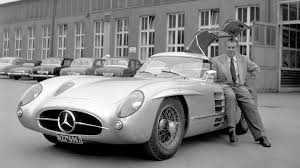

Mercedes-Benz 300 SLR Uhlenhaut Coupé je jedan od najređih i najlegendarnijih automobila u istoriji. Napravljen je 1955. godine, a proizvedena su samo dva primerka. Zasnovan je na trkaćem modelu 300 SLR, ali je prilagođen za vožnju po javnim putevima. Dizajnirao ga je Rudolf Uhlenhaut, glavni inženjer Mercedesa u to vreme, i često ga je koristio kao lično vozilo — zbog čega je auto i dobio njegovo ime. Karakteristike: 3.0-litarski osmocilindrični motor Maksimalna brzina oko 290 km/h (izuzetno za 1955. godinu) Lagano aluminijumsko telo Ikonična "gullwing" vrata Godine 2022, jedan primerak je prodat na aukciji za 142 miliona dolara, čime je postao najskuplji automobil ikada prodat. Uhlenhaut Coupé danas simbolizuje vrhunac tehničkog umeća i dizajna Mercedes-Benza u zlatnoj eri automobilizma.
